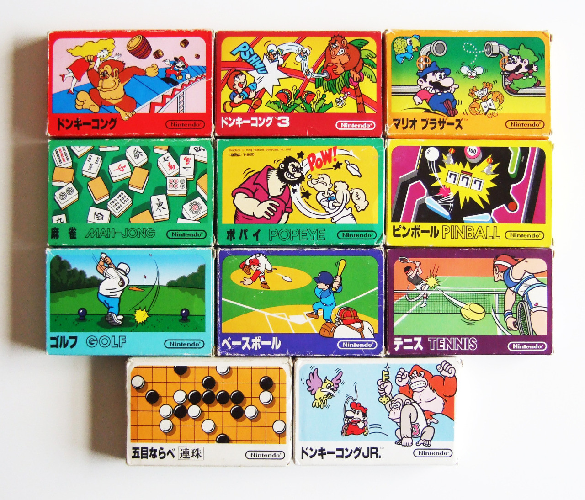
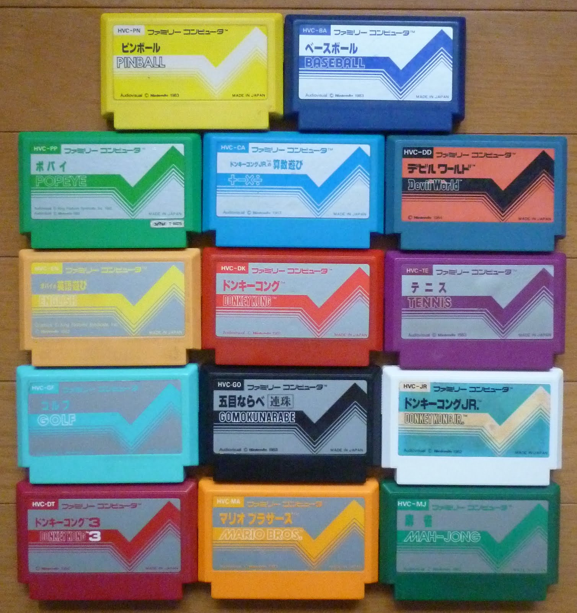
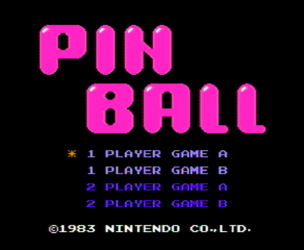
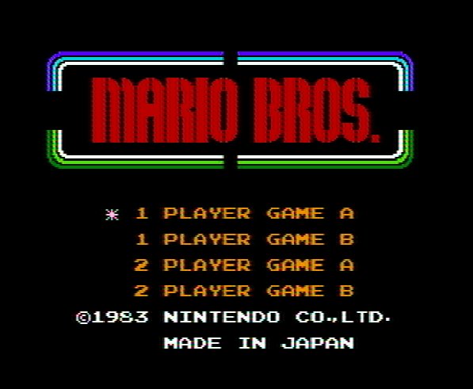
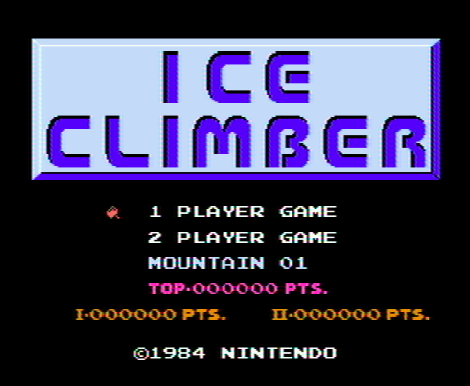
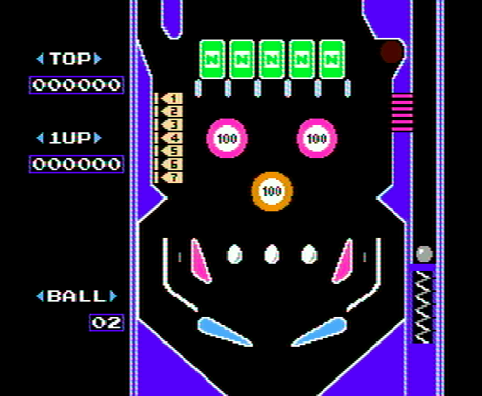
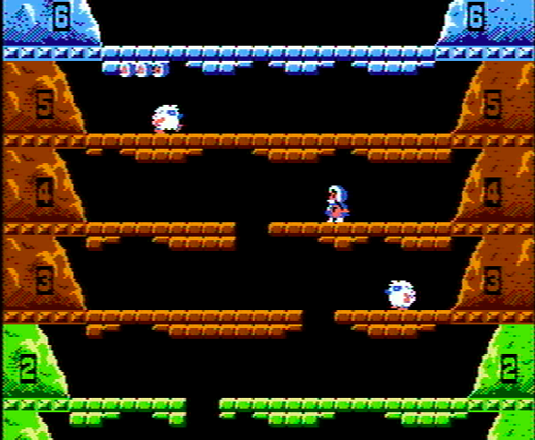
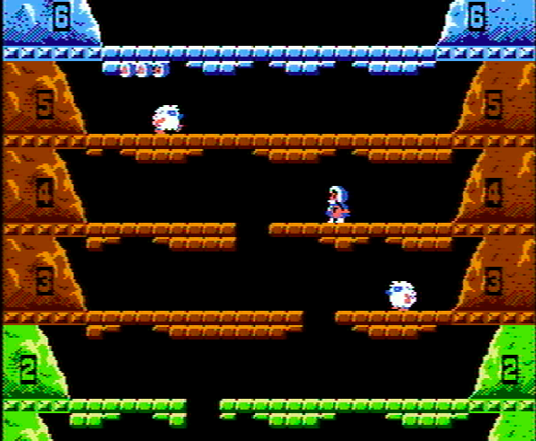
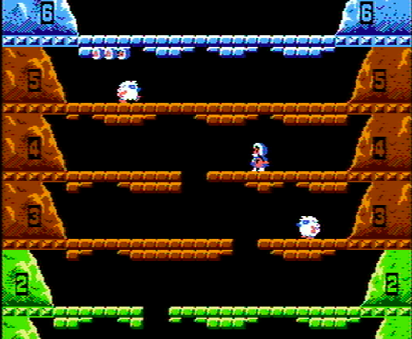

THE NINTENDO AESTHETIC
Recently , while hunting for design inspirations for the Time Machine Mk. ]|[, I realized how visually appealing Nintendo's designs are. Take a look at these Game and Watches from the '80s.I love the use colors on each of the handhelds. There's each a warm and cool color on every one of the games. Look at Pinball, for example. I think it's the best-designed Game and Watch and I love the black/orange/blue color scheme on the top as well as the red and white stripes on the inside. It's minimal while also being funky and fun, just the way a pinball machine should be.
Let's now look at the Famicom, my favorite console of all time. It seems to be obscured by the NES a lot despite the fact that the Famicom was actually released 2 eyars earlier. It is extremely different from the NES, from the size to the colors. While the NES is gray and black with a futuristic vibe, the Famicom, on the other hand, is red and white and almost half the size of the NES. The FAMILY COMPUTER branding on the front is the icing on the cake.
 
The cartridges for the Famicom is in my opinion extremely well designed, especially the boxes. The artwork is colorful and funky like a comic book, and it gives the boxes a cute charm that makes them worth saving along with the games. The cartridges on the left are all launch titles for the Famicom, and I really dig the shared pulse design. It's minimal but fun. Another thing I love about the cartridges is how they are all colored differently unlike NES cartridges which are all grey. I also favor the size and shape of Famicom cartridges over NES cartridges, which are unneccesarily big.




 

The games themselves are no exception either. This is Pinball, Mario Bros, and Ice Climber, all first-party launch titles for the Famicom. Just like the console and cartridges, all the games use bright colors like pink or green but does a good job of blending them along with dark colors like black and brown to make them pop but not get in the way of the visuals.
I feel a lot of Nintendo's design elements will find its way into many of my projects.
---CREDITS---
Game and Watch photos
Famicom and Famicom Disk System
Famicom cartridge boxes
Famicom pulse design cartridges
Game screenshots by me

The games themselves are no exception either. This is Pinball, Mario Bros, and Ice Climber, all first-party launch titles for the Famicom. Just like the console and cartridges, all the games use bright colors like pink or green but does a good job of blending them along with dark colors like black and brown to make them pop but not get in the way of the visuals.
I feel a lot of Nintendo's design elements will find its way into many of my projects.
---CREDITS---
Game and Watch photos
Famicom and Famicom Disk System
Famicom cartridge boxes
Famicom pulse design cartridges
Game screenshots by me